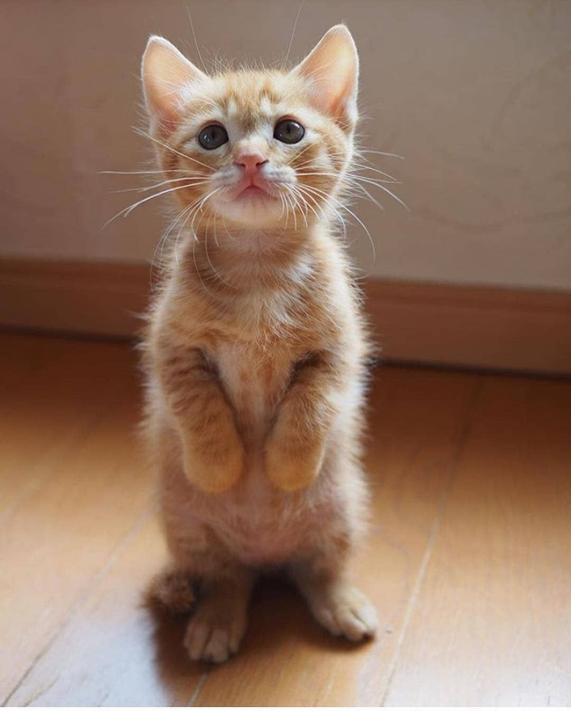

Pixie
Pixie is super friendly and sweet. She loves to sit next to you and follow you around. When you go to pet her she will press against your hand showing she loves it. This little girl is super happy to be off the streets.
